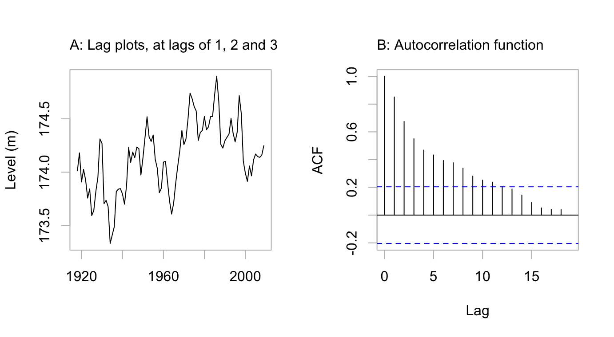
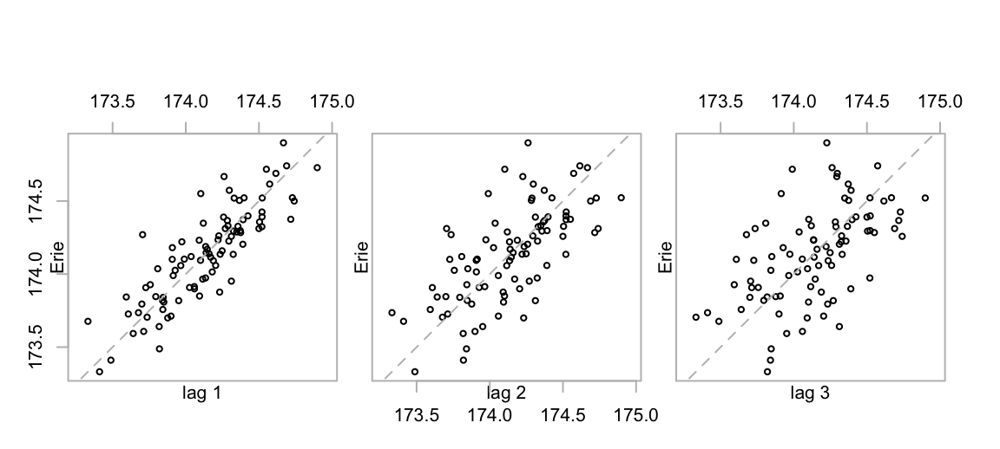
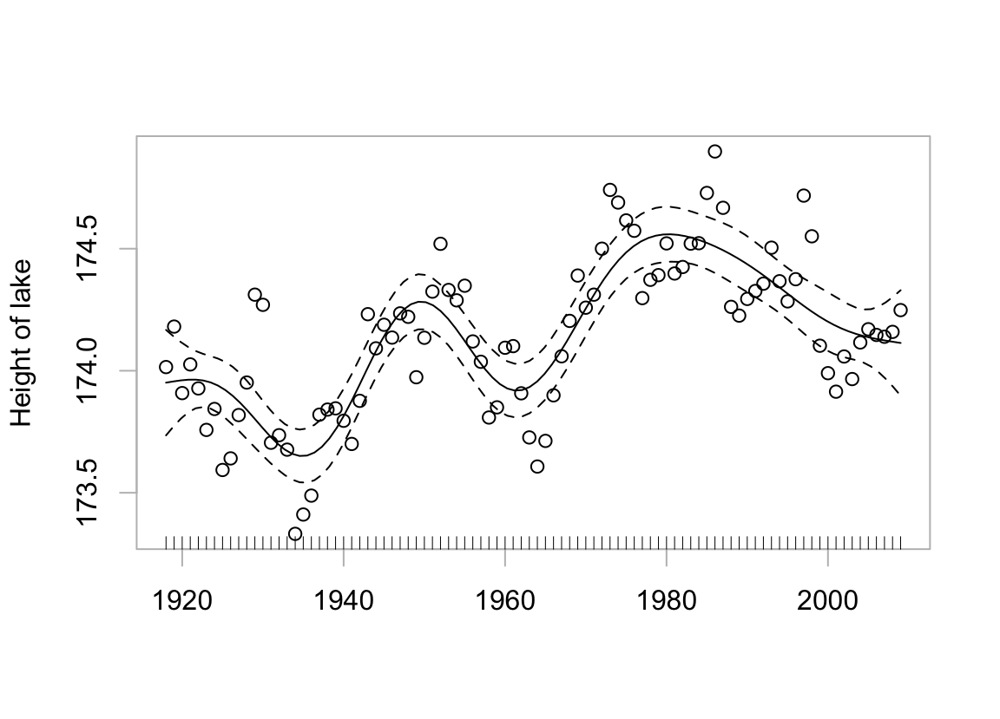
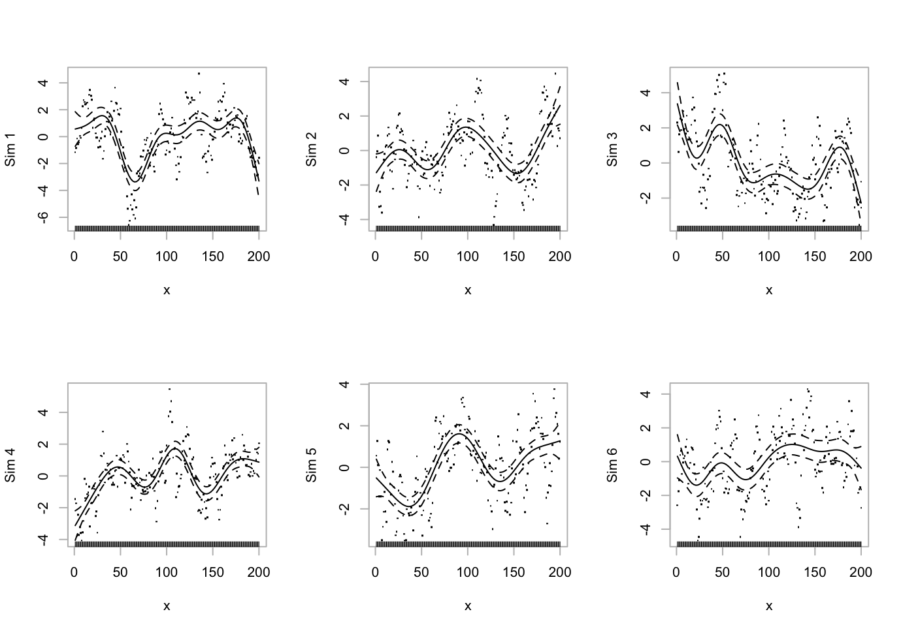
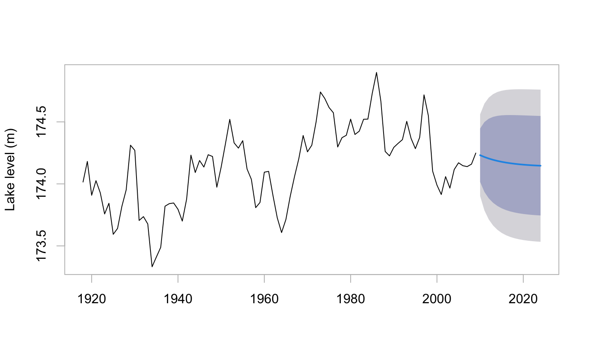
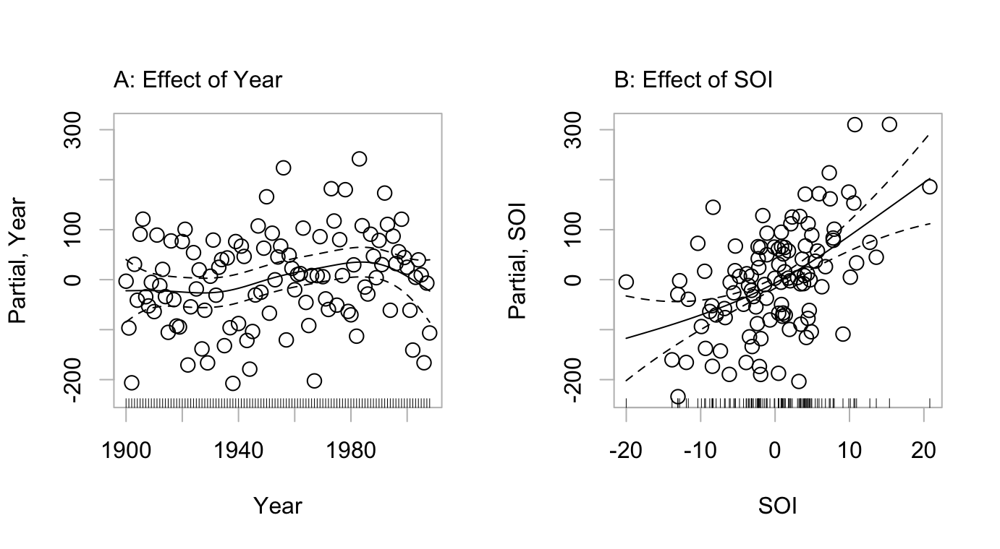
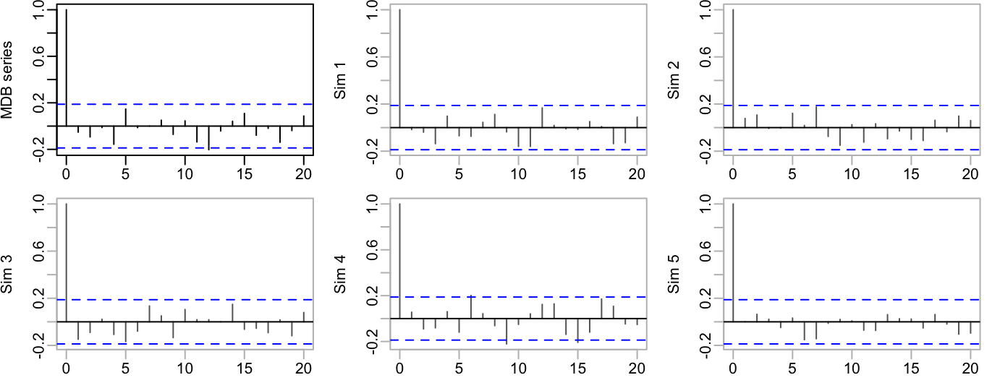
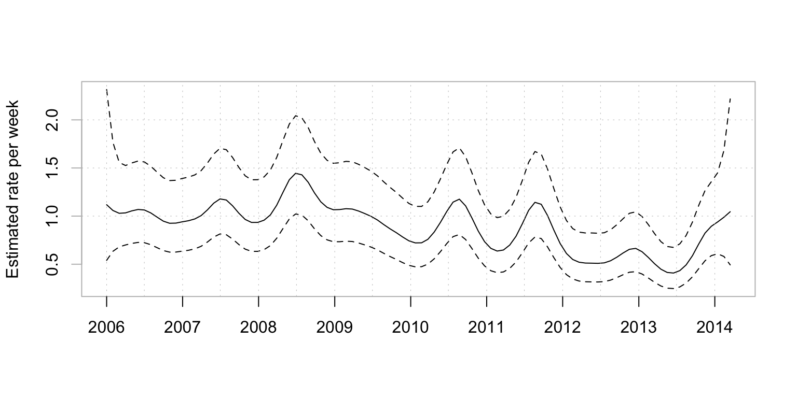

Erie <- DAAG::greatLakes[,"Erie"]
attributes(Erie) # Erie is a time series, for years 1918:2009
$tsp
[1] 1918 2009 1
$class
[1] "ts"5 Regular Time Series in R
Time points that are close together in time commonly show a sequential (usually, +ve) correlation.
Any process that evolves in time is likely to have a sequential correlation structure. The value at the current time is likely to be correlated with the value at the previous time, and perhaps with values several time points back. The discussion that follows will explore implications for data analysis.
R’s acf() and arima() functions are useful tools for exploring time series.
The data series Erie, giving levels of Lake Erie from 1918 to 2009, will be used as an example from which to start the discussion.1
The series is available as the column Erie in the multivariate time series object DAAG::greatLakes.
2 shows a plot of the series.

Code is:
par(mfrow=c(1,2))
# Panel A
plot(Erie, xlab="", fg="gray", ylab="Level (m)")
mtext(side=3, line=1, adj=0,
"A: Lag plots, at lags of 1, 2 and 3")
## Panel B
acf(Erie, main="", fg="gray")
mtext(side=3, line=1, adj=0, "B: Autocorrelation function")Figure 5.2 shows a lag plot of the series.
cap33 <- "Lag plots for Lake Erie levels vs levels at lags 1, 2 and 3
respectively."

Where values of covariates are available that largely or partly explain the dependence, it may make sense to account for these in the model. The details of how this should be done will depend on the intended use of the model.
2 and Figure 5.2 provide a good starting point for investigation of the correlation structure.
There is a strong correlation at lag 1, a strong but weaker correlation at lag 2, and a noticeable correlation at lag 3. Such a correlation pattern is typical of an autoregressive process where most of the sequential dependence can be explained as a flow-on effect from a dependence at lag 1.
In an autoregressive time series, an independent error component, or innovation is associated with each time point.2 For an order \(p\) autoregressive time series, the error for any time point is obtained by taking the innovation for that time point, and adding a linear combination of the innovations at the \(p\) previous time points. (For the present time series, initial indications are that \(p=1\) might capture most of the correlation structure.)
Patterns that are repeatable
Smoothing terms can be fitted to the pattern apparent in serially correlated data, leaving {} that are pretty much uncorrelated. Such a pattern is in general, however, unrepeatable. It gives little clue of what may happen the future. A re-run of the process (a new {}) will produce a different series, albeit one that shows the same general tendency to move up and down.
What sorts of patterns may then be repeatable? Indications that a pattern may be repeatable include:
- A straight line trend is a good starting point for some limited extrapolation. But think: Is it plausible that the trend will continue more than a short distance into the future?
- There may be a clear pattern of seasonal change, e.g., with seasons of the year or (as happens with airborne pollution) with days of the week. If yearly seasonal changes persist over different years, or weekly day-of-the-week changes persist over different weeks, these effects can perhaps be extrapolated with some reasonable confidence.
- There is a regression relationship that seems likely to explain future as well as current data.
An ideal would be to find a covariate or covariates than can largely explain the year to year changes. For this series, this does not seem a possibility. In the absence of identifiable direct cause for the year to year changes, a reasonable recourse is to look for a correlation structure that largely accounts for the pattern of the year to year change.
5.1 Smooth, with automatic choice of smoothing parameter
Figure 5.3 uses the abilities of the mgcv package, assuming independently and identically distributed data (hence, no serial correlation!) to make an automatic choice of the smoothing parameter. As the curve is conditional on a particular realization of the process that generated it, its usefulness is limited. It does not separate systematic effects from effects due to processes that evolve in time. The curve is not repeatable.

Code is:
suppressPackageStartupMessages(library(mgcv))
df <- data.frame(height=as.vector(Erie), year=time(Erie))
obj <- gam(height ~ s(year), data=df)
plot(obj, fg="gray", shift=mean(df$height), residuals=TRUE, pch=1,
xlab="", ylab="Height of lake")The pointwise confidence limits are similarly conditioned, relevant perhaps for interpolation given this particular realization. All that is repeatable, given another realization, is the process that generated the curve, not the curve itself.
5.2 Fitting and use of an autoregressive model
Several different types of time series models may be used to model the correlation structure, allowing realistic estimates of the lake level a short time ahead, with realistic confidence bounds around those estimates. For the Lake Erie data, an autoregressive correlation structure does a good job of accounting for the pattern of change around a mean that stays constant.
Figure 5.2 suggested that a correlation between each year and the previous year accounted for the main part of the autocorrelation structure in Figure 2. An AR1 model (autoregressive with a correlation at lag 1 only), which we now fit, formalizes this.
ar(Erie, order.max=1)
Call:
ar(x = Erie, order.max = 1)
Coefficients:
1
0.8512
Order selected 1 sigma^2 estimated as 0.02906The one coefficient that is now given is the lag 1 correlation, equaling 0.851.
- investigates how repeated simulations of this process, with a lag 1 correlation of 0.0.85, compare with
- This illustrates the point that a GAM smooth will extract, from an autoregressive process with mean 0, a pattern that is not repeatable when the process is re-run.

Code is:
par(mfrow=c(2,3))
for (i in 1:6){
ysim <- arima.sim(list(ar=0.85), n=200)
df <- data.frame(x=1:200, y=ysim)
df.gam <- gam(y ~ s(x), data=df)
plot(df.gam, fg="gray", ylab=paste("Sim", i), residuals=TRUE)
}The curves are different on each occasion. For generalization beyond the particular realization that generated them, they serve no useful purpose.
Once an autoregressive model has been fitted, the function forecast() in the forecast package can be used to predict future levels, albeit with very wide confidence bounds. For this, it is necessary to refit the model using the function arima(). An arima model with order (1,0,0) is an autoregressive model with order 1.

Code is:
erie.ar <- arima(Erie, order=c(1,0,0))
suppressPackageStartupMessages(library(forecast))
fc <- forecast(erie.ar, h=15)
plot(fc, main="", fg="gray", ylab="Lake level (m)")
# 15 time points aheadThis brief excursion into a simple form of time series model is designed only to indicate the limitations of automatic smooths, and to give a sense of the broad style of time series modeling. The list of references at the end of the chapter has details of several books on time series.
5.3 Regression with time series errors
Figure 5.6 shows the estimated contributions of the two model terms, in a fit of annual rainfall in the Murray-Darling basin of Australia as a sum of smooth functions of Year and SOI.

mdbRain, in a GAM model that adds smooth terms in Year and Rain. The dashed curves show pointwise 2-SE limits, for the fitted curve.
Code is:
par(mfrow=c(1,2))
mdbRain.gam <- gam(mdbRain ~ s(Year) + s(SOI), data=DAAG::bomregions)
plot(mdbRain.gam, residuals=TRUE, se=2, fg="gray",
pch=1, select=1, cex=1.35, ylab="Partial, Year")
mtext(side=3, line=0.75, "A: Effect of Year", adj=0)
plot(mdbRain.gam, residuals=TRUE, se=2, fg="gray",
pch=1, select=2, cex=1.35, ylab="Partial, SOI")
mtext(side=3, line=0.75, "B: Effect of SOI", adj=0)The left panel indicates a consistent pattern of increase of rainfall with succeeding years, given an adjustment for the effect of SOI. Errors from the fitted model are consistent with the independent errors assumption. The model has then identified a pattern of increase of rainfall with time, given SOI, that does seem real. It is necessary to warn against reliance on extrapolation more than a few time points into the future. While the result is consistent with expected effects from global warming, those effects are known to play out very differently in different parts of the globe.
Sequential correlation structures are often effective, with data collected over time, for use in modeling departure from iid errors. Where there is such structure structure in the data, the methodology will if possible use a smooth curve to account for it.
The residuals can be checked to determine whether the fitted curve has removed most of the correlation structure in the data. Figure 5.7 shows the autocorrelation function of the residuals, followed by autocorrelation functions for several series of independent random normal numbers. Apart from the weakly attested correlation at a lag of 12 years, which is a commonplace of weather data, the pattern of sequential correlation is not much different from what can be expected in a sequence of independent random normal numbers.

mdbRain.gam. The five remaining panels are the equivalent plots for sequences of independent random normal numbers.
Code is:
mdbRain.gam <- gam(mdbRain ~ s(Year) + s(SOI), data=DAAG::bomregions)
n <- dim(DAAG::bomregions)[1]
acf(resid(mdbRain.gam), ylab="MDB series")
for(i in 1:5)acf(rnorm(n), ylab=paste("Sim",i),
fg="gray", col="gray40")5.4 \(^*\)Box-Jenkins ARIMA Time Series Modeling
Models that are closely analogous to ARIMA models had been used earlier in control theory. ARIMA models are feedback systems! From the perspective of the Box-Jenkins ARIMA (Autoregressive Integrated Moving Average) approach to time series models, autoregressive models are a special case. Many standard types of time series can be modeled very satisfactorily as ARIMA processes.
The simulations in Figure 5.7 show a pattern of variation that seems not too different from that in the actual series. Modeling of the process as an ARMA or ARIMA process (i.e., allow for a moving average term) may do even better. Use the auto.arima() function in the forecast package to fit an ARIMA process:
5.5 Count Data with Poisson Errors
Data are for aircraft accidents, from the website https://www.planecrashinfo.com/. The 1920 file has accidents starting from 1908. The full data are in the dataset gamclass::airAccs. Data are a time series.
Serious accidents are sufficiently uncommon that joint occurrences, or cases where one event changes the probability of the next, are likely to be uncommon.
Such issues as there are with sequential correlation can be ameliorated by working with weekly, rather than daily, counts.

Figure 5.8 shows a fitted smooth curve, with pointwise confidence bounds, from a GAM smoothing model that was fitted to the weekly counts.
The function gamclass::eventCounts() was used to create weekly counts of accidents from January 1, 2006:
## Code
airAccs <- gamclass::airAccs
fromDate <- as.Date("2006-01-01")
dfWeek06 <- gamclass::eventCounts(airAccs, dateCol="Date",
from=fromDate, by="1 week", prefix="num")
dfWeek06$day <- julian(dfWeek06$Date, origin=fromDate)Code for Figure 5.8 is then.
## Code
suppressPackageStartupMessages(library(mgcv))
year <- seq(from=fromDate, to=max(dfWeek06$Date), by="1 year")
at6 <- julian(seq(from=fromDate, to=max(dfWeek06$Date),
by="6 months"), origin=fromDate)
atyear <- julian(year, origin=fromDate)
dfWeek06.gam <- gam(num~s(day, k=200), data=dfWeek06, family=quasipoisson)
avWk <- mean(predict(dfWeek06.gam))
plot(dfWeek06.gam, xaxt="n", shift=avWk, trans=exp, rug=FALSE,
xlab="", ylab="Estimated rate per week", fg="gray")
axis(1, at=atyear, labels=format(year, "%Y"), lwd=0, lwd.ticks=1)
abline(h=0.5+(1:4)*0.5, v=at6, col="gray", lty=3, lwd=0.5)
# mtext(side=3, line=0.75, "A: Events per week, vs date", adj=0)The argument k to the function s() that sets up the smooth controls the temporal resolution. A large k allows, if the data seem to justify it, for fine resolution. A penalty is applied that discriminates against curves that are overly ‘wiggly’.
Not all count data is suitable for modeling assuming a Poisson type rare event distribution. For example, the dataset DAAG::hurricNamed has details, for the years 1950-2012, of US deaths from Atlantic hurricanes. For any given hurricane, deaths are not at all independent rare events.
5.6 Exercises
- Use the function
acf()to plot the autocorrelation function of lake levels in successive years in the data setLakeHuron(in datasets). Do the plots both withtype="correlation"and withtype="partial".
5.7 References and reading
See the vignette that accompanies the forecast package.
Hyndman and Athanasopoulos (2021) . Forecasting: principles and practice. OTexts.